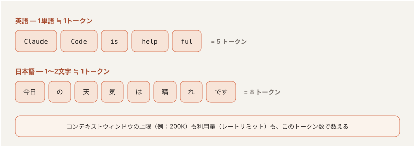
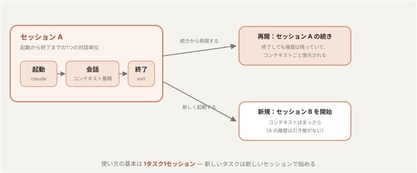
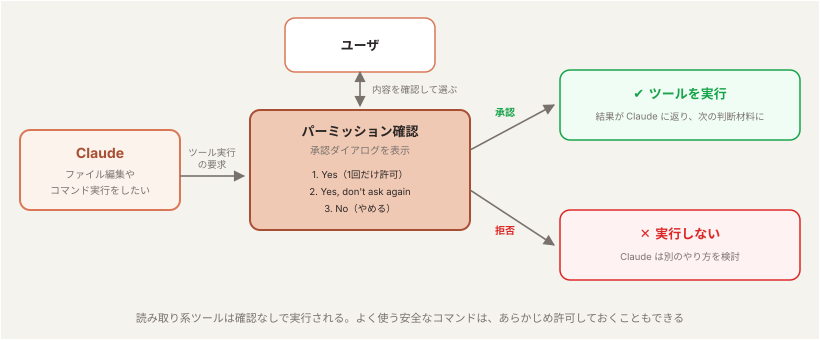
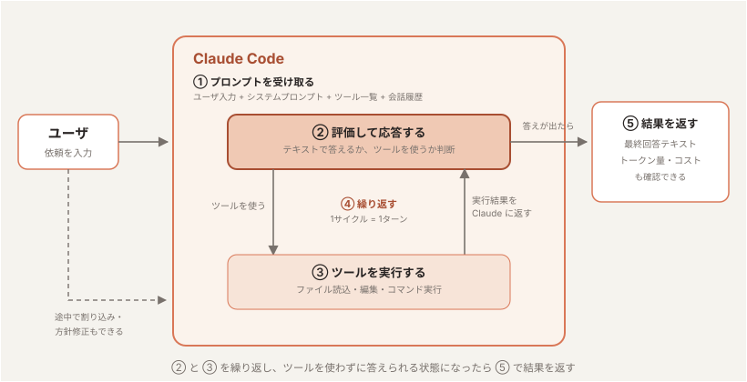

Claude Code の基本
「目標：チャットで AI を使ったことがある人が、Claude Code（ハーネスを備えた AI）の仕組みを知り、実際に使えるようになる」
1到達目標・時間配分
到達目標
- Claude Code が「モデル＋ハーネス」で動くことを、トークン・コンテキスト・セッション・パーミッションの言葉で説明できる
- 起動・スラッシュコマンド・承認モード・キーボードショートカットで Claude Code を操作できる
- CLAUDE.md・
@・!で Claude に情報を渡せる - Claude に作らせたコードの構造を、Claude に説明させて図に残せる
時間配分（90分）
| # | 内容（約1.5時間・手を動かしながら進めます） | 時間 |
|---|---|---|
| 1 | オープニング | 4分 |
| 2 | Claude Code とは？ | 12分 |
| 3 | 基本的な使い方 | 20分 |
| 4 | Claude に情報を渡す | 14分 |
| 5 | 実践：ゲームを作らせて、構造を読み解く | 21分 |
| 6 | まとめ | 4分 |
| 7 | 質疑応答 | 15分 |
2Claude Code とは？（12分）
2-1. Claude Code（2分）
- Anthropic が提供する エージェント型コーディングツール
- CLI（ターミナル）/ VS Code / JetBrains / Claude Desktop / Web (
claude.ai/code) の 5つの入口 がある - 本コースでは CLI（ターミナル） を中心に扱う
2-2. 用語（6分）
Claude Code の仕組みを、土台になる用語から順に押さえる。
トークン
- AI が文章を処理するときの 最小単位（英語は約4文字 ≒ 1トークン、日本語は1〜2文字 ≒ 1トークン）
- 利用量（レートリミット）も入出力のトークン数で計算される

参考: トークン分割を体験できるツール（OpenAI Tokenizer） — platform.openai.com/tokenizer
コンテキスト
- AI に渡される入力のすべて。会話・ファイル内容・コマンド出力が コンテキストウィンドウ に積まれる
- コンテキストウィンドウの上限は トークン数 で決まる（例：200K トークン）
- 会話を続けていくと コンテキストウィンドウを消費していく
- 上限に近づくと 自動コンパクション（要約圧縮）が走る — 情報のロスを伴う

モデル
- ここでは Large Language Model（LLM） を指す。コンテキスト（入力）を受け取り、その続きをトークン単位で予測して文章やコードを生成する「頭脳」
- 学習データには 締切（knowledge cutoff） があり、それ以降の出来事や新しいライブラリは知らないが、Web 検索やドキュメントを読ませて補うことができる
- モデル単体では、会話をまたぐ記憶はない。知っているのは今コンテキストに入っている内容だけ → エージェントがこれまでの会話の記録を保持し渡すことで、一連の会話として成り立つ
- Anthropic 社のモデルファミリーは以下。上位モデルほど賢いが、トークン単価と応答時間も増える:
| モデル | 特徴 | 使いどころ |
|---|---|---|
| Fable | 最上位 | 最も難しい推論・長時間の自律的なエージェント作業 |
| Opus | 高性能 | 複雑な設計判断・大規模なリファクタリング |
| Sonnet | 性能・速度・コストのバランス型 | 日常的な開発タスクの主力 |
| Haiku | 最速・低コスト | 簡単な質問・定型作業 |
- コンテキストウィンドウの大きさもモデルで決まる（Fable / Opus / Sonnet 系は 1M トークン、Haiku 4.5 は 200K トークン。2026年時点）
- 日常は既定のモデルで進め、設計判断や難しいバグ調査だけ Opus / Fable に上げるのが基本の使い方
ハーネス
- モデル（LLM）を実用的なエージェントとして動かすための 周辺機構の総称。考える・判断するのがモデル、ファイル操作やコマンド実行を担うのがハーネス
- ツール実行・パーミッション管理・コンテキスト管理（コンパクション）・セッション管理などを担う。このあと説明するセッションとパーミッションも、ハーネスの機能
- Claude Code = モデル + ハーネス。同じモデルでもハーネスの出来でエージェントの性能は大きく変わる

セッション
- Claude Code の起動から終了までの 1つの対話単位。会話履歴（コンテキスト）はセッションごとに保持される
- 終了しても履歴は残っており、あとから続きを再開できる
- 新しいセッションを始めるとコンテキストはまっさらになる — 1タスク1セッション が使い方の基本

パーミッション
- ツール実行（ファイル編集・コマンド実行など）の前に ユーザの承認を求める 仕組み。ハーネスの安全機構
- 読み取り系は確認なしで実行され、書き込みやコマンド実行は承認が必要（標準の設定の場合）
- 確認の度合いは切り替えられ、よく使う安全な操作はあらかじめ許可しておくこともできる

2-3. チャット（Claude.ai）との違い（1分）
チャットで AI を使うときとの違いは、ハーネスがあるかどうかにある。
| 観点 | Claude.ai（チャット） | Claude Code（AIエージェント） |
|---|---|---|
| ファイルアクセス | コピペで渡した範囲のみ | ローカルファイルに直接アクセス |
| 実行 | テキスト返答のみ | ファイル編集・コマンド実行を自分で行う |
| ループ | 人間が結果を貼り戻す | 自分でエラーを読み、自分で直す |
| 必要な仕組み | ─ | ハーネス（パーミッション・セッション管理など） |
2-4. AIエージェントの動き（3分）

- プロンプトを受け取る。 ユーザの入力に加えて、Claude Code が用意する指示（システムプロンプト）・使えるツールの一覧・これまでの会話履歴をまとめて受け取る。
- 評価して応答する。 Claude が今の状況を見て、どう進めるか決める。テキストで答える／ツールを使う（ファイル読込・編集・コマンド実行など）／その両方、のいずれか。
- ツールを実行する。 要求されたツールを実行し、結果を Claude に返す。この結果が次の判断材料になる。
- 繰り返す。 ステップ 2 と 3 を繰り返す。この 1 サイクルが 1 ターン。ツールを使わずに答えだけ返せる状態になるまで続く。
- 結果を返す。 最終的な回答テキストを返し、その作業で使った トークン量・コスト・セッション ID も確認できる。
3基本的な使い方（20分）
3-1. 起動・終了・再開（4分）
演習用の作業フォルダを作り、その中で Claude Code を起動する。
$ mkdir hello-world $ cd hello-world $ claude
- 初回はテーマ選択 → サインイン方法選択（Claude Pro/Max/Enterprise / API キー / Bedrock 等）
- 起動したフォルダ配下に すべてアクセスできる → 機密ディレクトリでは起動しない
起動に成功すると、以下のようなウェルカム画面が表示される。

新しいフォルダで初めて起動すると、そのフォルダを信頼するか の確認が表示される。

- Claude Code は起動したフォルダ配下を 読み取り・編集・コマンド実行 できる。そのため、起動時にユーザへ確認する（2-2 のハーネスの機能）
- 自分が作った／信頼できるプロジェクト（自分のコード・有名な OSS・チームの成果物）なら
1. Yes, I trust this folder - 心当たりのないフォルダなら、中身を確認するまでは
2. No, exitで抜ける
起動・終了・再開の操作
2-2 のセッションで見たとおり、終了しても履歴は残っており、続きから再開できる。
| 操作 | 方法 |
|---|---|
| 起動 | プロジェクト直下で claude |
| 終了 | Ctrl + C を 2 回 / /exit |
| 直前の続きから再開 | claude --continue |
| 過去のセッションを選んで再開 | claude -r（--resume） |
| セッションに名前を付ける | claude -n <name>（--name <name>） |
| 非対話で 1 問だけ | claude -p "..." |
パーミッションスキップ（上級者向け）
| オプション | 挙動 |
|---|---|
--dangerously-skip-permissions | すべてのパーミッション確認をスキップして実行する |
--allow-dangerously-skip-permissions | スキップを既定では無効のまま、セッション中に選択できるようにする |
3-2. スラッシュコマンド（6分）
まず最初に実施しておきたいコマンドを順に紹介する。
/status — セッション状態の確認
バージョン・サインイン情報・使用モデル・MCP サーバの状態など、現在のセッションの全体像を一覧表示する。「いま自分がどの環境・どのモデルで動いているか」を最初に確認する習慣をつける。

/config — 設定の確認・変更
Auto-compact / Thinking mode / 既定のパーミッションモードなど、Claude Code の動作設定を対話的に確認・変更できる。

/usage — 利用量の確認
現在のセッション・週単位の利用量（2-2 のトークン数で計算されるレートリミットの消費状況）を確認できる。リセット時刻も表示されるので、長時間の作業前にチェックすると安心。

/model — モデルの切り替え
2-2 で紹介したモデル（Fable / Opus / Sonnet / Haiku）を、用途に応じて切り替える。日常タスクは Sonnet、素早い回答が欲しいときは Haiku、といった使い分けができる。

/effort — 思考の深さの調整
low 〜 max の5段階で「速さ ⇔ 賢さ」のトレードオフを調整する。簡単な質問は低く、難しい設計判断は高く。

その他の基本コマンド
| コマンド | 説明 |
|---|---|
/help | コマンド一覧 |
/exit | セッション終了 |
紹介したコマンドを実際に実行して、自分の環境を確認する。
- 3-1 で起動した Claude Code で
/statusを実行し、バージョン・サインイン状態・使用モデルを確認する /usageで現在の利用量とリセット時刻を確認する/modelと/effortで現在の設定を確認する（変更してもよい）
3-3. 承認モードと Plan Mode（3分）
2-2 のパーミッションで見た「確認の度合い」は、承認モードで切り替える。
| モード | ステータスバー表示 | 挙動 |
|---|---|---|
| Default（Manual） | （表示なし）? for shortcuts | 標準動作。各ツールの初回使用時に承認を求める |
| Accept Edits | ▶▶ accept edits on | ファイル編集と一般的なファイル操作（mkdir mv cp 等）は自動承認、それ以外のコマンドは承認 |
| Plan Mode | ⏸ plan mode on | 読み取り専用 ツールだけで計画を立てる（編集しない） |
| Auto | ▶▶ auto mode on | バックグラウンドの安全チェック付きでツール呼び出しを 自動承認（危険な操作のみ確認に切り替わる） |
Shift + Tab で上記4つを循環切り替え。Default は、設定画面などでは Manual と表示されることがある。
使い分けの目安
- 新規領域・本番リポジトリ → Default
- テストが厚い既存領域 → Accept Edits
- 下調べ・計画したいだけ → Plan Mode（ファイル編集しない）
- 確認の往復を減らして長めのタスクを任せたい → Auto
Shift + Tabで上記4つのモードを切り替えてみましょう。最後は Default に戻しておく。
3-4. キーボードショートカット（2分）
| キー | 動作 |
|---|---|
Shift + Tab | 承認モードの切り替え（3-3） |
Esc | 入力クリア・ループ中なら割り込み（2-4 の「人間の関与」） |
Ctrl + C | 入力クリア / 2回で終了 |
Ctrl + R | 履歴検索 |
Up / Down | 履歴ナビゲーション |
3-5. 最初の依頼：Hello world（5分）
ここまでの内容を使って、Claude Code にアプリを1本作らせる。題材はシェルスクリプトの「Hello world」。3-1 で起動した hello-world フォルダの Claude Code で、承認モードは Default のまま進める。
依頼する
「Hello world」と表示するシェルスクリプトを作って
承認して作らせる
- Claude がファイル作成の承認を求めてくる → 内容を確認して承認（Default モードの承認フロー を体験）
- 作成されたファイル（例：
hello.sh）の中身を確認する
実行して確認する
作ったアプリを実行して、結果を見せて
実行前に、以下のような 承認ダイアログ が表示される。
Bash command bash hello.sh Run hello.sh to verify output This command requires approval Do you want to proceed? ❯ 1. Yes 2. Yes, and don't ask again for: bash * 3. No
- 何のコマンドが・何のために 実行されるかが表示される — 内容を確認してから
1. Yesで許可する 2. Yes, and don't ask again for: bash *を選ぶと、以後bashコマンドは確認なしで実行される（許可リストに追加される）- 心当たりのないコマンドなら
3. Noで拒否できる — これが 2-2 で学んだ パーミッション（ハーネスの安全機構） の実物
$ bash hello.sh
Hello world
- Claude が
bash hello.shを実行し、Hello worldが表示されることを確認する - 依頼 → 作成 → 実行 → 確認 — 2-4 で学んだエージェントループの一周を最小サイズで体験できた
✻ Pondering… (12s · ↓ 1.2k tokens · esc to interrupt)
- 先頭の単語（Pondering, Brewing, Vibing…）は ランダムな遊び言葉 で、処理内容とは関係ない
- 経過時間 と 消費トークン数 が確認できる
esc to interrupt—Escでいつでも割り込んで 指示し直せる（2-4「人間の関与」の実物）
2: Fine で OK（0: Dismiss で閉じてもよい）。
● How is Claude doing this session? (optional) 1: Bad 2: Fine 3: Good 0: Dismiss
4Claude に情報を渡す（14分）
Claude に情報を渡す方法は2通りある。セッションのたびに自動で渡す CLAUDE.md と、プロンプトの先頭に記号を付けてその場で渡す @・!。あわせて、ハーネスの動作を決める settings.json も紹介する。
4-1. CLAUDE.md（8分）
セッション開始時に 自動で読み込まれる「Claude への指示書」。2-2 で見たとおり、モデルは会話をまたぐ記憶を持たず、新しいセッションはまっさらな状態から始まる。プロジェクトのルールや前提を CLAUDE.md に書いておけば、どのセッションでも同じ前提で動いてもらえる。
| 配置場所 | スコープ |
|---|---|
~/.claude/CLAUDE.md | 全プロジェクト共通（個人の指示） |
<repo>/CLAUDE.md | プロジェクト共通（チームで共有） |
<repo>/CLAUDE.local.md | プロジェクト個人用（git 管理外） |
/init — CLAUDE.md の生成
フォルダ全体を解析して、CLAUDE.md の雛形を自動生成する。生成された CLAUDE.md は、claude を起動したフォルダ（プロジェクトルート）直下 に作成される。

hello-world/
├── CLAUDE.md ← ここに作成される
└── hello.sh
CLAUDE.md にルールを書き足し、新しいセッションでもそのルールが効いていることを確かめる。
- hello-world フォルダの Claude Code で
/initを実行し、CLAUDE.md を作る - できた CLAUDE.md をエディタで開いて読む（Claude に「CLAUDE.md に何が書いてあるか教えて」と聞いてもよい）
- ルールを追記させる:
あなたの指示
CLAUDE.md に「シェルスクリプトの先頭には、何をするスクリプトかを説明するコメントを1行書く」というルールを追記して
/exitで終了し、もう一度claudeを起動して新しいセッションを始める- 新しいセッションで依頼する:
あなたの指示できたスクリプトの先頭に説明のコメントが入っていれば、CLAUDE.md が読み込まれている
1から10まで数えて表示するシェルスクリプトを作って
/memory を実行すると、読み込まれている CLAUDE.md の一覧から選んで開ける。
4-2. @ と !：その場で渡す（3分）
CLAUDE.md が毎回渡す情報なら、こちらはプロンプトの先頭に記号を付けて、その場で 情報を渡す方法。
| 記号 | 動作 | 例 |
|---|---|---|
@ | ファイル・ディレクトリを指定して読ませる | @hello.sh |
! | シェルコマンドを実行し、結果を会話に入れる | !ls |
@ — ファイル / ディレクトリ参照
@hello.sh このスクリプトを1行ずつ説明して
- 該当ファイルを 明示的に読ませる。Claude が探す手間が省け、曖昧さが減ってコンテキストも節約できる。
- CLAUDE.md の中に
@README.mdのように書くと、そのファイルも CLAUDE.md と一緒に読み込まれる。
! — シェル実行
!ls
- プロンプトとして送らず シェルだけ実行 する。コマンドと出力は会話に入るので、手元の状態をそのまま Claude に見せられる。
- 自分で打ったコマンドなので、承認ダイアログは出ない。
- hello-world フォルダで、上の
@hello.shと!lsの例を試してみましょう。
4-3. settings.json（3分）
パーミッションの許可リスト・Hooks・環境変数など、ハーネスの動作設定 を JSON で定義する。
| 配置場所 | スコープ |
|---|---|
~/.claude/settings.json | ユーザ共通（全プロジェクトに適用） |
<repo>/.claude/settings.json | プロジェクト共通（チームで共有・コミット対象） |
<repo>/.claude/settings.local.json | プロジェクト個人用（git 管理外） |
3-5 の承認ダイアログで 2. Yes, and don't ask again を選ぶと、その許可ルールが設定ファイルに保存され、以後は確認なしで実行される。2-2 のパーミッションで見た「あらかじめ許可しておく」は、この仕組みのこと。
settings.json と CLAUDE.md の使い分け
| 観点 | settings.json | CLAUDE.md |
|---|---|---|
| 形式 | JSON | Markdown（自然言語） |
| 役割 | ハーネスの動作設定（許可・Hooks・環境変数） | Claude への指示・プロジェクト知識 |
参考リンク
5実践：ゲームを作らせて、構造を読み解く（21分）
ここまでの内容を使って、Claude に小さなゲームを作らせ、そのコードの構造を Claude に説明させる。題材はテトリス風の落ち物パズル。盤面の管理・ブロックの回転・衝突判定・列の消去・ゲームループ・キー入力と部品がはっきり分かれていて、読み解く対象に向いている。
できあがるコードは数百行になり、自分で読むのはつらい量になる。そういうコードこそ、構造把握 → 該当箇所の特定 → 仕組みを聞く → 図で残す の順に Claude に説明させると早い。作らせたプログラムの構造をつかむときの型として使える。
5-1. ゲームを作らせる（8分）
/exit で hello-world の Claude Code を終了し、新しいフォルダで起動し直す。新しいフォルダなので、3-1 で見たフォルダの信頼確認がもう一度表示される。
$ cd .. $ mkdir mini-game $ cd mini-game $ claude
ブラウザで遊べるテトリス風の落ち物パズルを作って。index.html・style.css・game.js の3ファイルに分けて、外部ライブラリは使わないで。矢印キーで移動と回転をし、横一列がそろったら消えて得点が増え、上まで積み上がったらゲームオーバー。
- ファイル作成の承認を求められたら、内容を確認して許可する
- コードが長いので、出力に数分かかることがある。スピナーの経過時間とトークン数を見ながら待つ
できたらブラウザで開いて遊んでみる（4-2 の ! を使う）:
!open index.html
Windows の場合は !start index.html。
5-2. 構造把握（3分）
作った直後の Claude は、コードの中身をすでにコンテキストに持っている。初めて読むコードと同じ条件にするため、/exit → claude で新しいセッションを始める（2-2 のとおり、新しいセッションはまっさらな状態から始まる）。
ここからは読むだけなので、Shift + Tab で Plan Mode に切り替えておく（読み取り専用ツールしか使わないので安全）。
このフォルダのファイル構成と、それぞれのファイルの役割を教えて
- Claude が index.html・style.css・game.js を自分で読んで回答することを観察する
- 何のファイルを読んだか がツール実行ログに出る — 2-4 のエージェントループの実物
5-3. 該当箇所の特定（3分）
機能から逆引きで、実装箇所を特定させる。
横一列がそろって消える処理は、どのファイルの何行目？
- grep 相当の探索を Claude が自分で行い、ファイル名と行番号で答える様子を観察する
5-4. 処理の仕組みを聞く（3分）
4-2 の @ で対象のファイルを指定して、ピンポイントに聞く。
@game.js
ブロックを回転したとき、壁や他のブロックと重ならないかをどう判定しているか説明して
@でファイルを渡すと 曖昧さが減り、探索分のコンテキストも節約 できる
5-5. 図で残す（4分）
最後に、解析結果をドキュメントとして残せる形で出力させる。
キーを押してから、ブロックが動き、一列そろって消え、得点が増えるまでの流れを Mermaid のシーケンス図で出力して
続けて、生成した図をファイルとして残す。Plan Mode のままでは保存できないので、Shift + Tab で Plan Mode を解除してから頼む:
シーケンス図を game-flow.md に保存して
✓まとめ（4分）
振り返り
| 章 | 学んだこと |
|---|---|
| 2 | Claude Code = モデル + ハーネス。用語（トークン / コンテキスト / モデル / ハーネス / セッション / パーミッション）と、答えが出るまでツール実行を繰り返すエージェントループ |
| 3 | 起動・終了・再開（--continue -r）、最初に実行するスラッシュコマンド（/status /usage /model /effort）、4つの承認モード、キーボードショートカット、最初の依頼と承認ダイアログ |
| 4 | Claude に情報を渡す — CLAUDE.md（セッションのたびに自動で渡す）、@（ファイル参照）・!（シェル実行）、settings.json（ハーネスの動作設定） |
| 5 | 作らせたコードを読み解く型 — 構造把握 → 該当箇所の特定 → 仕組みを聞く → 図で残す |
claude を起動 → /init → 「このフォルダの構造を教えて」。調査・解析タスクから任せ始める のが、リスクなく Claude Code に慣れる近道。
💬質疑応答（15分）
ここまでの内容についての質問・疑問に答える。日常業務での適用イメージ（どのタスクから Claude Code に任せるか）もここで相談する。